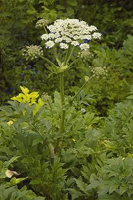

This plant is native to Iran and close surrounding regions, but is now naturalized in Norway and Sweden, and also in Finland where it is considered an invasive. The sap can cause phytophotodermatitis (burns and rashes) when contaminated skin is exposed to sunlight, though it is thought to be less dangerous than Giant Hogweed (H. mantegazzianum)
The winged Fruits, containing the seeds, have a light bitterness, a touch of citrus and a trace of fennel. It is similar in taste to Celery Seed (usually actually Lovage seed (better seed yield)) but more aromatic, and much lighter in intensity as it is ground including winged husks. In North America, Golpar is almost always sold ground, as it is usually so used in Persian cuisines, but I find the ground product lacks the citrus tone of the whole fruit. In Iran, it is most often sold as whole fruit, to be ground as needed.
More on More on the Parsley Family
|
More on Spices.
 The photo to the left shows a whole Golpar plant growing in Scandinavia.
The ground fruits of this plant are much used in Persian (Iranian) cuisine, especially for sprinkling on cucumbers, pomegranate seeds, cooked vegetables, broad beans, lentils and the like. It is also used in soups and stews, and a small amount (2 teaspoons / pound) may be cooked with beans, said to reduce farting. It is also used mixed with vinegar as a dip, particularly for Broad Beans. As a sprinkle, it may be used alone or combined with an equal amount of salt (golpar namac).
Tender shoots and leaves are often pickled (golpar
torshi), and the flower petals are used in a spice mix for flavoring rice,
chicken and fish. Subst: Celery Seed, but at most half the amount
as it is much more intense, but it is less aromatic.
Photo by Krister Brandser contributed to the Public Domain.
.